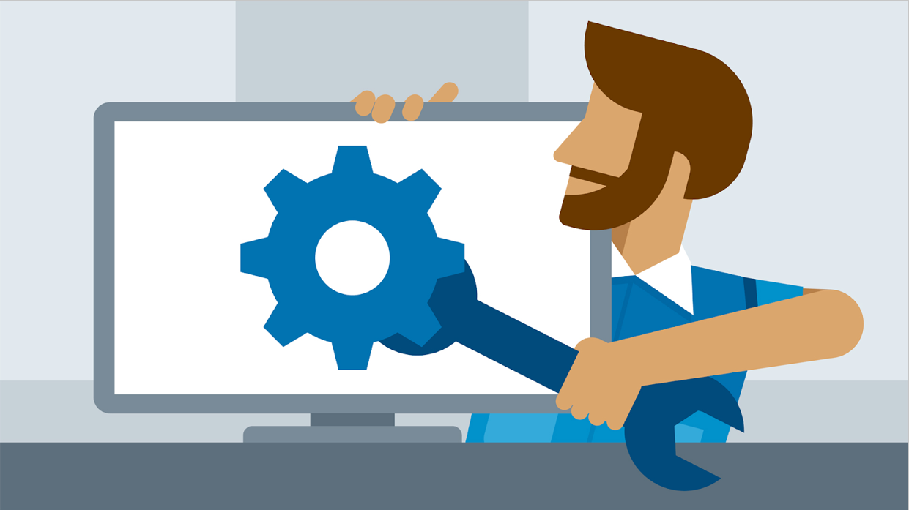

Jan 2023 - Oct 2024
Led the design, development, and global delivery of a comprehensive training and onboarding program for Alienware products at Dell Technologies. This program, aimed at enhancing technical support teams' expertise in gaming technologies, featured gamified e-learning, real-world simulations, and localized content in 8 languages, ensuring accessibility across global regions. The initiative significantly reduced escalations, improved resolution efficiency by 19%, and boosted learner satisfaction to 99%. By utilizing a hybrid Agile-Waterfall approach, I drove seamless collaboration among 35+ team members, optimizing onboarding and technical skills, ultimately elevating global customer satisfaction by 11.5%.


Revamped the bluescreen troubleshooting training for Dell Technologies, leading a cross-functional team to design an interactive, multi-modal curriculum. Successfully reduced tier-2 escalations by 17% and achieved a 96% learner satisfaction score. Delivered high-impact, agile-driven training modules across e-learning, instructor-led, and virtual formats, boosting team efficiency and supporting the seamless adoption of new troubleshooting workflows.

Led a performance improvement project to enhance the operational efficiency of a partner site, focusing on reducing ticket resolution times and boosting customer satisfaction. By implementing a hybrid approach (Agile and Waterfall), I drove iterative process improvements and delivered targeted training for partner site teams. This project resulted in a 20% reduction in resolution times and a 15% increase in customer satisfaction. Additionally, I developed a performance metrics dashboard and a comprehensive operational action plan, fostering sustained improvements and strengthening collaboration between Dell and the partner site.

Spearheaded the design and delivery of an advanced network troubleshooting training program aimed at enhancing technical support associates' ability to diagnose and resolve complex network issues. Through Agile methodologies, I led the development of interactive simulations, real-world role-play scenarios, and hands-on lab exercises. The program resulted in a 12.4% improvement in network issue resolution rates and a 95% learner satisfaction score. By focusing on skill enhancement and practical learning, the program also boosted customer satisfaction metrics related to network troubleshooting by 6.2%.
Led a strategic operations realignment project to optimize workflows, enhance training, and ensure adherence to Dell’s performance standards at a partner site. This hybrid approach focused on improving customer satisfaction and reducing repeat incidents. By delivering tailored training and implementing iterative workflow optimizations, the project resulted in a 29.6% reduction in repeat incident rates, an 8.7% boost in customer satisfaction, and streamlined operational processes. Through close collaboration with site leadership, the initiative also strengthened the ongoing partnership and ensured sustainable improvements.
Developed and launched an advanced troubleshooting learning pathway aimed at enhancing the technical skills of Dell's technical support engineers. The program featured six interactive modules, scenario-based simulations, and post-learning assessments, resulting in a 19% reduction in escalations to the engineering team. The pathway, designed using Agile methodologies, improved resolution times by 15% and achieved a remarkable 98% learner satisfaction rate due to its practical, engaging content and real-world application. This initiative significantly enhanced the team's capabilities in handling complex technical issues, reducing dependency on engineering resources.
Led the localization of Dell’s Peripheral Troubleshooting training for new hires into four additional European languages—German, Portuguese, French, and Italian. This initiative streamlined onboarding for new employees in key regions, reducing onboarding time by 14% and increasing new hire satisfaction by 8%. By overseeing the translation process, ensuring cultural accuracy, and collaborating with regional stakeholders, the project successfully enhanced training accessibility and effectiveness, improving the overall learning experience for new hires across Europe.
Led the development of an interactive peripheral troubleshooting training module designed to reduce ramp-up time for new hires and improve engagement. By utilizing Agile methodologies, I delivered a comprehensive e-learning module with 18 troubleshooting scenarios, complemented by Virtual Instructor-Led Training (VILT) materials. The program achieved a remarkable 98% learner satisfaction score and boosted new hire productivity by 10% within the first 90 days. This initiative aligned closely with organizational goals, enhancing the onboarding process and enabling new employees to contribute more effectively and quickly.

Spearheaded a performance improvement initiative aimed at addressing workflow bottlenecks within a technical support team. Through a hybrid approach, I led process improvements and training sessions, successfully reducing the repeat incident rate from 33.6% to 28.2% in just four months. The project also boosted customer satisfaction by 5%. By analyzing team performance, delivering targeted training, and making iterative process adjustments, I helped enhance collaboration, optimize team workflows, and establish a performance tracking system for sustained improvements.

Led the localization of advanced hardware troubleshooting training content into five key languages (French, German, Spanish, Japanese, and Mandarin) to support Dell's global technical support teams. By collaborating with regional SMEs, translation vendors, and content developers, I ensured culturally accurate and linguistically precise training modules. This project resulted in enhanced accessibility for 85% of Dell's global workforce, achieving a 96% learner satisfaction score. The successful implementation improved global team competency and reduced training time across regions.
Led the development of a comprehensive e-learning training module for Dell technical support associates, designed to improve skills in handling advanced hardware issues. I managed the entire lifecycle from requirements gathering to post-training assessments. The training module, created using tools like Xyleme and Articulate Storyline, significantly enhanced learners' application of troubleshooting concepts by 15%. The training also resulted in a 10% reduction in repeat incident rates and achieved a learner satisfaction score of 91%.